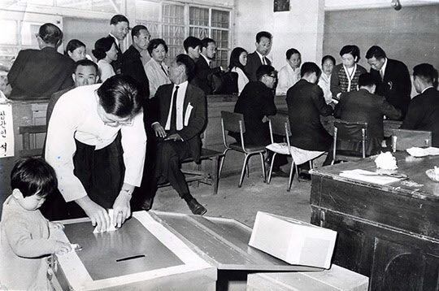
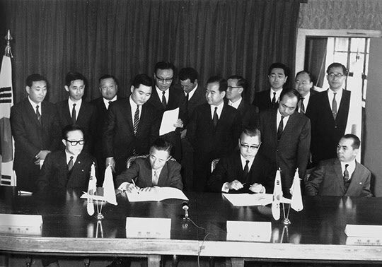

보도일 2014-01-12출처 조선일보 프리미엄조선 연재
아카자와 쇼이치가 인솔한 일본조사단이 포항을 다녀간 1969년 9월 중순, 박태준은 포스코 내에 ‘건설기획조정위원회’를 구성했다. 이 조직은 설계 및 공정 기획, 시공업체와 계약업무 조정, 예산 통제, 설비구매 기획, 설비 인도 및 설치 기획 등에 대한 실무적 검토와 실행을 맡는다.
그러나 아직도 포스코는 ‘무(無)’의 상태와 다름없었다. 직원들이 여러 선진국 제철소에서 기술연수를 받고 있어도, 순수한 포스코의 힘으로는 건설공정 관리와 설비 선택을 감당할 능력이 모자랐다. 그래서 박태준은 업무를 크게 둘로 쪼갠다. 설비 선정과 설치에 대한 감독은 일본 기술자문단에 맡기고, 부지조성과 공장건물 신축과 국내 건설업체 감독은 포스코가 전담하기로 한다.
이 지점에서 박태준은 업무효율의 극대화를 위하여 중요한 또 하나의 결정을 내린다. 그가 십여 년 전 미국 육군부관학교에서 처음 배웠고 이태 전부터는 일본 월간지 『토목』에서 접해온 ‘복잡한 공정관리를 위한 PERT기법’을 포스코에 도입하기로 한 것이다.
PERT기법은 정해진 공기(工期)와 예산에 맞춰 효율적으로 프로젝트를 진행하는 공사 실행계획이다. 이는 공사일정과 전체적 공기를 산출하고 각 부문의 상호의존 활동을 조정하는 업무에 안성맞춤이었다. 공사부장 심인보가 며칠을 끙끙댄 끝에 「새로운 공정관리기법」이란 교재를 만들었다. 박태준은 모든 간부를 불러 모아 그의 강의를 듣게 했다. 그리고 못을 박았다.
“오늘 이 시점부터 모든 업무를 PERT기법으로 관리하고 모든 추진계획을 PERT기법에 의거해 보고하라.”
1960년 가을에 미국 연수를 떠나는 박태준에게 뭐든 잘 배워오면 국가를 위해 쓰일 날이 올 것이라고 했던 박정희. 그때 그의 그 작별사가 박태준의 각별한 노력과 어우러져 멋지게 실현되는 장면이었다.
포스코가 영일만 공장 건설의 착공지점 쪽으로 침착하게 차질 없이 다가가는 1969년 10월 17일, 박태준이 전혀 기웃거리지 않은 정치권은 저항과 소란과 음모를 거쳐서 3선 개헌안 국민투표를 실시했다. 투표율 77.1%에 찬성 65.1%, 반대 31.3%였다. 3선 개헌 찬반(贊反)에다 ‘대통령 직위 진퇴(進退)’를 직결시켜 일대 정치적 승부수를 걸었던 박정희에게는 불만스러운 결과였다. 그 후속 조치의 일환으로 권력 판도에 변화가 일어난다.

정일권 총리 이하 내각과 이후락 비서실장이 일괄 사표를 제출했다. 이것은 그해 여름에 박정희가 김종필을 달랠 때 미리 약속한 일들의 하나이기도 했다. 여기서 박정희는 상공부장관 김정렴을 비서실장으로 부르고, 이후락을 중앙정보부장에 앉히는 인사도 단행한다. 김정렴은 박정희의 경제를 더 밝게 하는 역할을 할 것이고, 이후락은 박정희의 정치를 더 어둡게 하는 역할을 할 것이다.
1969년 가을이 저물었다. 11월 하순에 접어들자 국민투표 후유증이 가라앉으며 한국경제 전망에 강한 청신호가 들어왔다. 농업은 벼 수확 773만7000여 석을 올려 최대 풍작을 달성하고, GNP 성장률은 15% 이상—1969년 GNP 성장률은 유례없이 15.9%였음—으로 예측되고, 소비자물가 상승률은 9%대로 떨어져서 1960년대를 통틀어 최저치에 머물고 있었다.
1969년 12월 3일, 드디어 ‘박정희 근대화의 가장 선명한 청신호’에 불이 들어온다. 한국 종합제철소 건설자금 조달을 위한 한일기본협약 조인식이 그것이다. 만약 아카자와가 보고서에 부정적 평가나 미적지근한 평가를 담았더라면 또 다시 얼마나 더 질질 끌게 될지 몰랐을 시대적 국가적 대사(大事)가 불과 100여일 만에 실현된다. 박태준도 곁에 앉아서 지켜보는 가운데 김학렬 부총리와 가네야마 주한 일본대사가 양국을 공식 대표하여 서명한 문서에는 이런 내용들이 담겨 있다.
<종합제철소의 규모, 설비, 내용, 건설, 공기 등에 관해서는 기본적으로 한국측의 건설계획을 조정한 일본조사단의 보고서에 따라 실시한다. 일본측은 재산 및 청구권에 관한 일본국과 대한민국의 협정 및 관련 문서에 의거하여 한국의 종합제철 건설을 위한 협력을 제공한다는 의도를 표명한다.>
거듭 말하지만 ‘일본조사단의 보고서’라는 단서를 주목해야 한다. 그들의 펜에 착공 시기 등 포철의 장래가 걸린 것이었는데, 박태준이 이미 그해 가을에 단장(아카자와)을 감화시켜 놓았으니….
그리고 협약서에는 <일본측의 협력은 다음의 설비를 대상으로 구체화한다>라는 조항도 포함되고, 그 밑에 제선공장(고로), 코크스공장, 소결공장, 제강공장, 연속주조공장, 분괴압연공장, 반(半)연속식 압연공장, 원료하역 및 처리 설비, 동력 및 용수설비 등이 제시돼 있다. 특이한 한 가지는, 포스코의 역사를 통틀어 ‘첫 판매 제품’을 생산하게 되는 ‘중후판공장’이 빠져 있다는 점이다.
이것은 유대인 괴상이라 불린 아이젠버그가 중후판공장 건설을 선수 치듯이 장악했기 때문에 발생한 사안인데, 뒤에 다룰 테지만, 1970년 여름에 박태준이 아이젠버그와 거의 결투에 가까운 한판 승부를 거치고 나서야 포스코가 중후판공장(요새는 ‘후판공장’이라 함)을 첫 준공 공장으로 직접 짓게 된다.

포항제철 1기 완공(조강 연산 103만 톤 규모)을 위해 3년에 걸쳐 일본이 제공할 자금은 총 1억2370만 달러였다. 청구권 자금 7370만 달러와 일본수출입은행 상업차관 5000만 달러. 청구권자금은 유상 4290만 달러, 무상 3080만 달러.
1962년 울산 30만 톤 종합제철 좌절, 1964년 12월 박정희의 서독 방문과 종합제철에 대한 새로운 결심, 1965년 5월 박정희의 미국 피츠버그 방문과 포이 접견 및 박정희가 박태준에게 내린 종합제철 특명, 1966년 1월 박정희의 미국 방문과 포이 접견, 그해 11월 서방 5개국 8개 철강사의 KISA 구성, 그리고 기나긴 지리한 교섭…. 1967년 10월 3일 박정희의 ‘준비 덜 된 종합제철’ 기공식(포항) 강행, 11월 8일 종합제철건설사업추진위원회 위원장에 박태준 공식 임명, 박태준의 KISA를 향한 비판과 불만 및 재협상, 1969년 2월 박태준의 대일청구권자금 전용 건의와 박정희의 재가, 박태준과 정부 관료들의 곡절 많은 한일협상과 1969년 8월 양국의 원칙적 합의, 그리고 그 실현을 앞당겨준 아카자와 쇼이치와 박태준 사이의 ‘가을비의 섭리’….
그렇게 박정희와 박태준의 포항종합제철은 천신만고의 길을 헤쳐 나와 상법상 주식회사로 탄생한 다음에도 거의 이태나 더 지나서야 비로소 ‘진정한 착공식’을 기획할 수 있게 된다.
대일청구권자금(일제식민지 배상금) 일부를 전용하여 포항종합제철 건설에 투입하자는 한일협약식을 그 현장에서 증인처럼 지켜본 박태준은 ‘국가적 대의’에 순수하게 복무하라는 대명의 천만 근 무게를 온 영혼으로 감당하며 다시 옷깃을 가다듬었다. 자립경제 기반 위에서 번영을 구가하고 선진제국과 어깨를 나란히 한다는 국가적 숙원이 이루어질 수 있느냐 없느냐. 이것이 포항제철의 성패와 직결돼 있다는 자각을 새삼 똑바로 세웠다. 협약 서명을 지켜본 그 자리가 어쩌면 자기 인생에서 영원히 잊지 못할 엄숙한 한 장면이 될 것 같았다.
확실히 박태준은 ‘박정희의 영예’를 한층 더 영광스럽게 해주고 ‘박정희의 공로’를 한층 더 장대하게 해줄, 박정희 통치시대에 대한 평가에서 ‘박정희의 가장 밝은 자리’에 우뚝 서게 될 수밖에 없는 ‘박정희의 탁월한 인재’였다. 왜냐면 그는 두뇌, 체험, 견문, 지식보다 더 귀중한 정신적 자산을 소유하고 있었던 것이다.
무엇보다도 중국 신해혁명을 이끈 쑨원[孫文]이 소중히 간직했던 천하위공(天下爲公, 『예기(禮記)』 <예운(禮運)>편에 나오는 말로 ‘천하는 모든 사람의 것이 된다’는 뜻), 그 ‘공(公)’의 세계에 뿌리를 내린 무사심(無私心)의 투철한 애국적 신념과 확고한 청렴성이 그것이었다. 그는 부정, 부패, 야합, 아부 따위를 혐오했다. 구질구질한 것은 딱 질색이었다.
애국과 청렴이라는 무사심의 레일 위로 달리는 기관차처럼 살아가려고 했다. 그러한 박태준의 정신적 특장과 사람 됨됨이를 박정희가 전폭적으로 신뢰하고 옹호했으며, 이것은 대한민국 산업화 혁명전선의 두 사내를 이체동심(異體同心)의 하나로 묶어주는 강철 같은 띠이기도 했다.